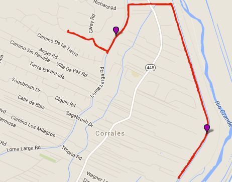
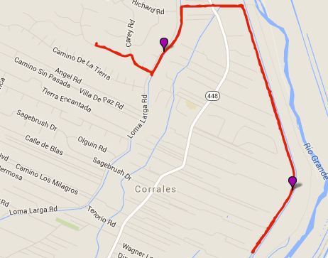

Hike New Mexico
w/ Tom & Ken
Corrales Acequia Walk


 

- Apr 3, 2013: Along Loma Larga
- Jun 10, 2013: Summer view on the Bosque Acequia
- Mar 29, 2013: View of the Sandia from the adjacent bosque
- May 9, 2013: Ranches and farms along the acequia
- Jan 22, 2016: Bosque Acequia winter view
- https://www.flickr.com/photos/139088815@N08/24903395275/in/album-72157664469121925
- https://www.flickr.com/photos/139088815@N08/24607527060/in/album-72157664469121925
- https://www.flickr.com/photos/139088815@N08/27264291951/in/album-72157664469121925
- https://www.flickr.com/photos/139088815@N08/26727496694/in/album-72157664469121925
- https://www.flickr.com/photos/139088815@N08/26727484164/in/album-72157664469121925
While this hike/walk is local to the Corrales area, and can be started almost anywhere along its length, there are some access points at the north and south ends. On the north end, from Corrales Road, there is a Bosque Parking entrance - a dirt road which terminates a couple of hundred yards, near the levee. From there, access is gained to the Bosque, to the levee and to the acequia that parallels the acequia. On the south end are parking areas along Corrales Road and also just off of Alameda. The south end has some paved hiking/running/biking paths as well as levee and acequia access. There is virtually no noticeable elevation gain, and it seems more like a casual and relaxing walk as opposed to a hike - but given its length, it can be made a hike of considerable length. This hike/walk is not referenced in any hiking literature, but numerous apps do have links: alltrails.com, trails.com, foursquare.com, etc.